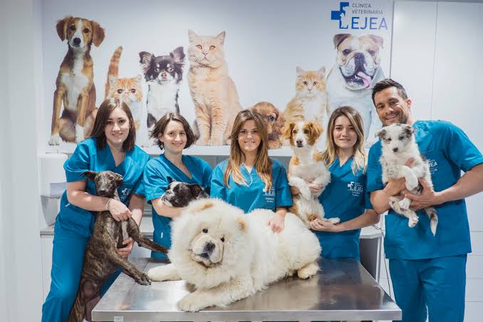

SOBRE NOSOTROS

En Veterinaria Dr. Peludo somos un equipo multidisciplinario apasionado por el bienestar animal en Jesús María. Nos dedicamos a brindar atención médica de alta calidad orientada a la salud preventiva, diagnósticos certeros, cirugías generales, emergencias y cuidado integral para tus mascotas. Contamos con instalaciones equipadas y personal altamente calificado para acompañar a tu engreído en cada etapa de su vida con amor, paciencia y absoluto profesionalismo.